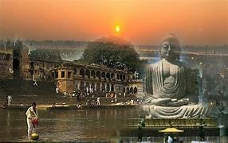

Gaya (IAST: Gayā) is a city, municipal corporation and the administrative headquarters of Gaya district and Magadh division of the Indian state of Bihar. Gaya is 116 kilometres (72 mi) south of Patna and is the state's second-largest city, with a population of 470,839. The city is surrounded on three sides by small, rocky hills (Mangla-Gauri, Shringa-Sthan, Ram-Shila, and Brahmayoni), with the Phalgu River on its eastern side.
The city of Gaya is a holy place of Hinduism, with a great number of Hindu deities represented in the engravings, paintings and carvings of its shrines. Of particular importance are the sites in the city associated with Vishnu, in particular the Phalgu River and the shrine Vishnupad Mandir, or Vishnupada, which is marked by a large footprint of Lord Vishnu engraved in a basalt block. Gaya is the location at which Rama, with Sita and Lakshmana, offered pind-daan for his father, Dasharatha. Gaya has since remained a site of key importance for the performance of the pind-daan ritual.
Gaya is the second-largest contributor to the economy of Bihar, after Patna. Agriculture is the leading economic activity of the district. The main crops grown are rice, wheat, potatoes, and lentils. Livestock raised include cattle, buffaloes, goats and pigs. Gaya has a large number of household industries, producing incense sticks (atagarbatti), local sweets tilkut (made with sesame seed) and lai (made with poppy seed), stone-work, hand weaving, power-loom weaving, textiles and garments, small-scale manufactured goods, and plastic products. Small-scale industries also include agricultural services, metalworking, machinery and equipment production and repair services. The main vegetable market in the city is the Kedarnath Market. Commercial activities are located along its main roads; the city also has a large number of informal shops. As Gaya is an important centre of religious tourism, accommodation is widely available.Bodh Gaya's largest hotel is the Maha Bodhi Hotel, Resort & Convention Centre; the Sambodhi Retreat, a resort of Bihar, is also in the town.
In the 12th century CE, Gaya was invaded by Muhammad Bakhtiyar Khilji of the Ghaznavid Empire. By 1557, it had become part of the Mughal Empire, and remained under its power until the Battle of Buxar and the beginning of British rule in 1764. Gaya, along with other parts of the country, gained its independence in 1947.
Gaya is named after the demon Gayasura (meaning "the demon Gaya") who dwelt the area during the Treta Yuga. According to Vayu Purana, Gaya was the name of a demon (Asura) whose body became pious after he performed strict penance and secured blessings from Lord Vishnu. It was said that the body of Gayasura was transformed into the series of rocky hills that make up the landscape of Gaya.